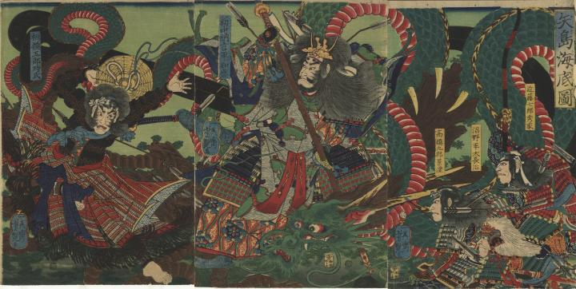

海底で平家の亡霊たちと共に漂う龍。鱗の色は深緑で、蛇腹は赤い。
著作者：一英齋芳艶／出典：親書誌：U426_nichibunken_0325：矢島海底圖；ヤシマ カイテイ ノ ズ／日付：2014／資源識別子：U426_nichibunken_0325_0001_0000
Copyright (c)2010- International Research Center for Japanese Studies, Kyoto, Japan. All rights reserved.